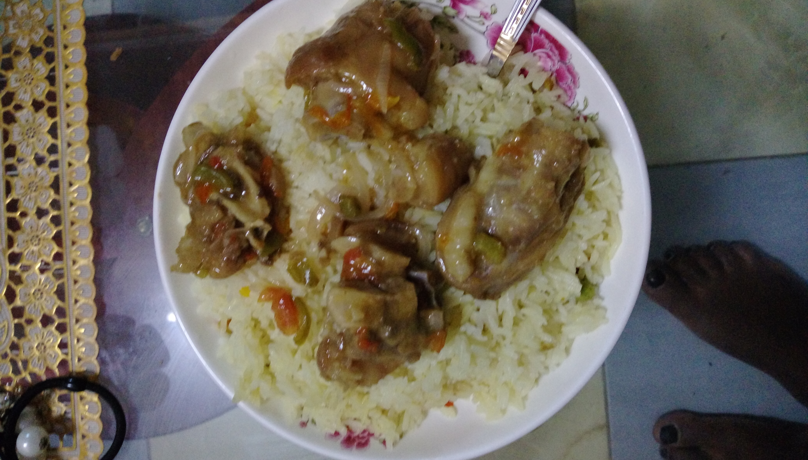

La historia no es como otras supongo extraña pero interesante te ayudara a comprender que todo lo que ocurre es por algun proposito, que no podemos predecir nuestro futuro pero estemos alerta por cualquiera situacion
que se presente, y tambien a querer y aceptar lo que tenemos porque cuando ya no este nos lamentaremos y a no aspirar a lo grande cuando no hay posibilidades sino a mejor, a no confiar del todo en las apariencias que se nos presenta en la vida.